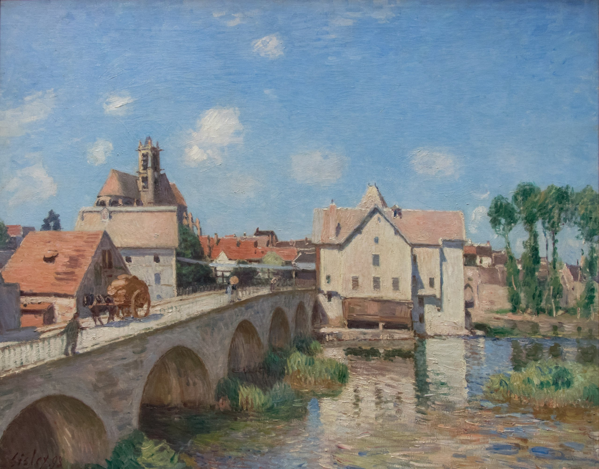

Альфред Сислей
Le Pont de Moret (Мост в Морэ), 1893

Холст, масло, 73,5 x 92 см
Музей д’Орсе, Париж.
История картины
- Возможно, в коллекции Франсуа Дюпу, Руан
- До 1972 года в коллекции доктора Эдуардо Моллара, Париж. В 1972 году принята государством в качестве наследства от Энрикеты Олсоп от имени доктора Эдуардо Моллара в Национальные музеи для музея Жё-де-Пом
- В 1972 году передана в Лувр, Париж
- С 1972 по 1986 год Лувр, Галерея Жё-де-Пом, Париж
- В 1986 году передана в Музей д’Орсе, Париж. Во времена Сислея в городах региона Сена и Марна кипела местная торговля: баржи на канале, мукомольная и кожевенная фабрики в Море, верфи в окрестностях Сен-Маммеса, а также сады, огороды и фермы в Ле-Саблоне. Сислей посетил этот район в конце 1879 года в поисках недорогого жилья и близко познакомился с ним. С 1880 года его домом был Вене-Надон, расположенный в 75 километрах от Парижа. Затем он прожил в Море и Ле-Саблоне шесть лет, прежде чем вернуться в Море в 1889 году. Хотя Тобиас Смоллетт описывал Море-сюр-Луан как "очень скромное" место, путеводители XIX века восхваляли его "господствующее положение на Луэне, крепостные стены и ворота, огромный разрушенный донжон и красоту готической церкви". Мосты были излюбленной темой и композиционным приёмом Сислея, а мост Море послужил источником вдохновения для многих работ. Осенью 1887 года и весной 1888 года, когда он жил в Ле-Саблоне, он создал свои первые виды этого места, а в 1890 году в нескольких драматических композициях мост и мельница изображены под снегом. Он менял свои взгляды на Море, часто фокусируя свои композиции на мельнице с церковью Нотр-Дам за ней и изображая другой пролёт моста, ведущего в город через Бургундские ворота. В 1891 году он написал картину, изображающую реку Луэн с обоих берегов, на которой виден городской пейзаж, обрамлённый или просвечивающий сквозь ряд тополей. В следующем году он изменил свой мотив, изобразив те же самые места в утреннем свете и на закате. Казалось, Сислея привлекали сцены с водой, что позволяло ему запечатлевать отражения и динамичные действия на берегу реки. К тому времени, когда Сислей написал это полотно, он явно впитал в себя элементы окружающего пейзажа, используя богато окрашенную и плотно структурированную композицию из неба и облаков, кирпича и известкового раствора, воды и отражений. Он расположился ближе к мосту, создавая эффектное начало работы, когда она простирается от левого нижнего края холста к мельнице в центре. Плоскость изображения чётко разделена, а верхняя часть неба подчёркнута частично затемнённой церковной башней, мельницей и тополями. В отличие от своих современников, пейзажи Сислея редко изобилуют фигурами. Вместо того, чтобы изображать прогуливающиеся пары или компании, катающиеся на лодках, фигуры на картинах Сислея органично вписываются в окружающую обстановку, являясь случайными как по назначению, так и по масштабу. Фигуры на мосту Море сливаются со сценой так же естественно, как облака на небе или отражения в воде внизу.
Источник: https://www.musee-orsay.fr/en/artworks/le-pont-de-moret-597